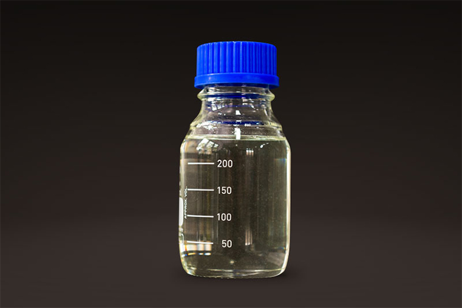

Foto Asam SulfatAsam Sulfat
Asam sulfat adalah asam mineral kuat yang sangat korosif dengan rumus kimia H₂SO₄. Zat ini berbentuk cairan bening, tidak berwarna, tidak berbau, dan memiliki kekentalan yang menyerupai minyak pekat. Asam sulfat dikenal sebagai salah satu komoditas kimia paling krusial di dunia karena digunakan dalam berbagai proses manufaktur. Sifatnya yang sangat reaktif terhadap air membuat proses pelarutannya menghasilkan panas yang sangat tinggi (eksotermik), sehingga memerlukan penanganan yang sangat hati-hati. Dalam hubungannya dengan amonium sulfat (pupuk ZA) yang dibahas sebelumnya, asam sulfat merupakan bahan baku utama yang direaksikan dengan amonia untuk menghasilkan kristal pupuk tersebut. Selain itu, zat ini juga banyak digunakan sebagai anoda dalam baterai aki kendaraan, agen dehidrasi dalam laboratorium, serta bahan baku pembuatan detergen dan pewarna.
Hubungi Kami